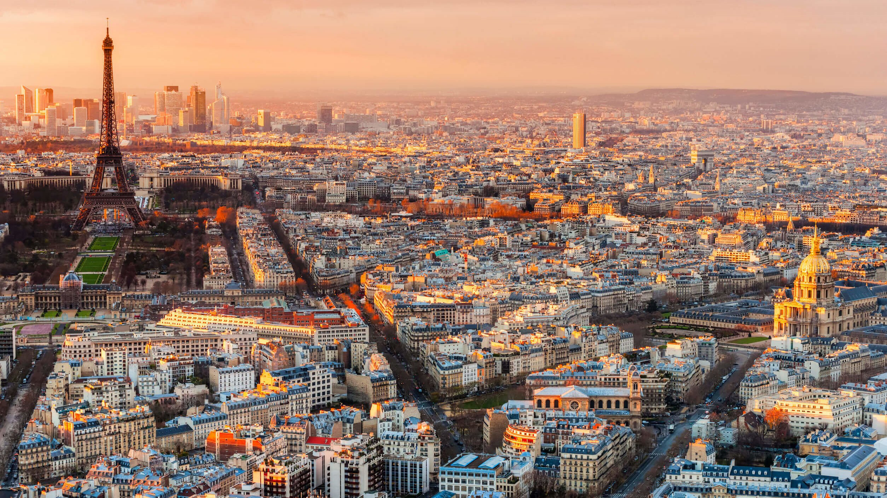

Bezienswaardigheden
Parijs de hoofdstad van frankrijk, daarbij is het ook 1 van de bekendste steden ter wereld. Dat komt onder andere doordat het de stad van de liefde is en de eiffeltoren daar staat. de stad heeft 12 miljoen inwoners ,ht is daarom ook een multiculturele samenleving.
Prijzen
Parijs is zeker 1 van de duurste steden, het staat zelfs in de top 10 met de duurste steden van europa. gelukkig kun je hier ook zeker goedkope eettentjes en hotels vinden, daarom je kunt de reis zo goedkoop of zo duur maken als je zelf zou willen.
top 5 hotels
Dit zijn de top 5 hotels
( ik heb bij dit lijstje niet gelet op de prijzen)
hoe kun je het bereiken?
omdat parijs zo dichtbij nederland ligt, kun je het op heel veel manieren bereiken.
auto
het is met de auto ongeveer 5 en een half uur rijden. dit is zonder stops en overnachtingen
trein
je kunt voor 30 euro naar parijs gaan rechtstreeks met thalys. Dit is alleen de heen weg. dus voor de heen en terug weg ben je ongeveer 60 eruor kwijt. het ligt er natuurlijk wel aan vanuit waar je wilt gaan. Deze deal is met ns, ns rijdt overal dus je kunt vanaf overal in nederland naar parijs.
vliegtuig
je kan al vanaf 99 euro in het vleigtuig zitten, deze vlucht is op een doordeweekse dag. Let er daarom ook op als je gaat boeken, wanneer je wilt en vanaf waar.
persoonlijke ervaring
ik was in parijs in januari 2022.IK vond het een hele mooie en drukke stad. Elk gebouw was mooi. het mooiste vond ik wel het louvre en de eiffeltoren. Ik ben zelf niet in het louvre geweest maar de buitenkant vond ik heel mooi gemaakt. Ook vond ikde winkel straat De Champs-Élyséessuper leuk, omdat dit ligt aan de arc triomphe en leuke winkels hadden. Dit verschilt natuurlijk per persoon.